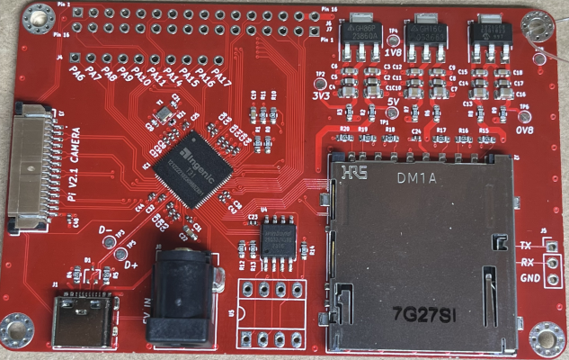

What is the Teacup Tinkerboard? #

> Makers #
Something between a Micocontroller and a Single Board computer, Teacup allows you to optimize your next project without loosing the flexablity of the linux ecosystem. Teacup is a referance design, our aim is to provide a smooth ramp to a professional prodcut design
> Learning #
Take a modern, simplified approch to hands on learning classic computer science concepts and arhecture using a platform that is in mass produced commerial products today. Our goal is to demystify concepts by relating them into accessable analogs
What is the Hacker Homestead? #
The Hacker Homestead is a combination of community and commerical efforts aimed at “Organic technology development and education”.
The Teacup tinkerboard project is the pilot project of this exciting new venture.
Our core mission is to “hunt, grow, and share technology”
If you would like to learn more about the Hacker Homestead, its community and sponsors please visit www.hackerhomestead.com
Guided Learning #
We have layed out the sections of this work based on a guided learning approch. You of course are encouraged to skip around, thats part of learning! However we are attempting to sequance the Volumes and Sections to create a smooth learning track for a very complex topic.
Here is a high level outline of the Volumes and what lies within
TC100 - Inroduction to Embeded Linux Development #
This would include a set of documentation and getting started videos for around teacup hardware and software. It would draw connections between the von numan archetecture and other basic computer concepts such as the
- boot loader
- Operating System
- Programs and APIs and point them out in the teacup design as referance. This will also call out the diffrenaces between simple ICs, ASICS, FPGAs, Microcontrollers, SoC/SBCs and where the T31 fits ( somewhere between a MCU and SBC)
TC101 - Intruction to T31 Archetecture and Development #
Getting to know the T31 processor. This is basiclly a run down of the datasheet and intro to SDK with some addtional context
TC102 - Intruction to the T31 SDK #
Really this is just running though validating the Specsheet and vendor SDK/HDK , and each of the high level use cases such as those sections called out in the SDK: camera, image processing, USB, SPI, I2C, networking, and general GPIO & PWM etc. The above is the specific “Getting started with T31 processor” type material.
TC103 - Comparitve Learning #
Another set of tutorials Would include reference experiments using common modules from projects like Arduino and Raspberry PI. Such as LCD, temperature acquisition. So that customers can learn not only how to reuse components that have already been well understood but they may contrast how they work with different platforms
TC200 - Advanced Features of the T31 #
Includes more advanced features of the T31 such as low power modes and using RTOS, Adding SRAM
TCXXX - Unstructured how-tos and expments (Hacking the Teacup) #
This would be where we go full boar into the crazy stuff that you never thought you could do with something the size of your fingernail
Supplimentery - T3x and T4x in the Wild #
This will be a collection of articles from those who have been reverse engenering products that the processor has been used in.